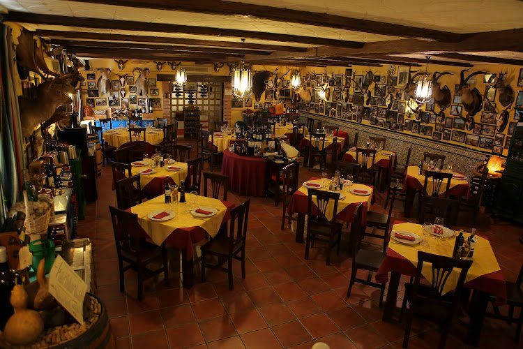
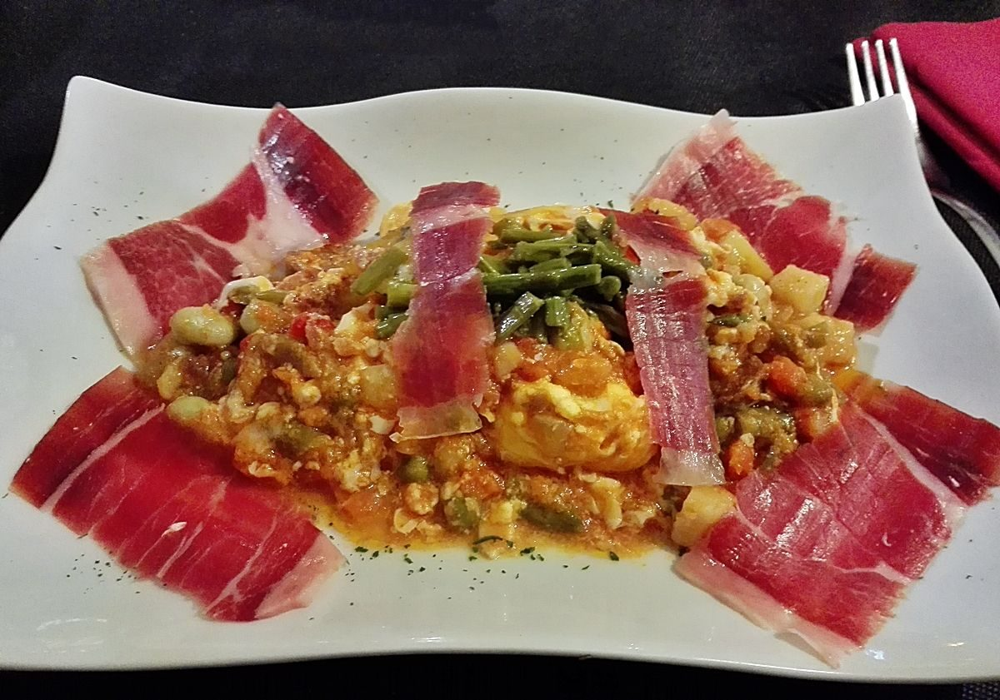
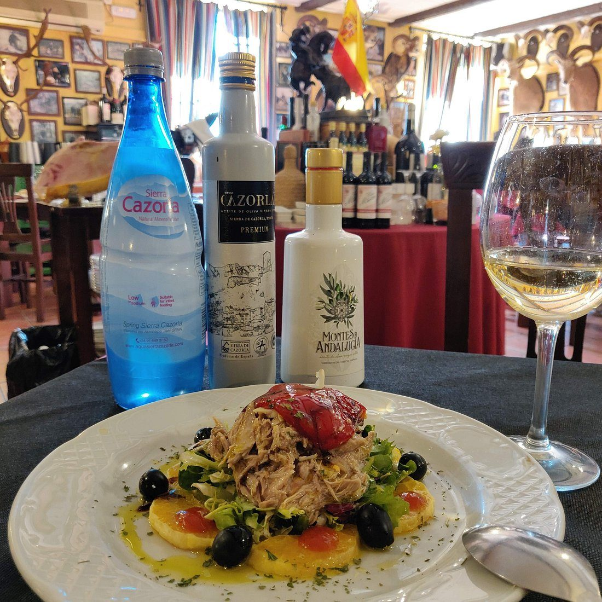
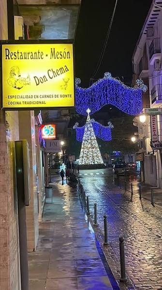

Mesón Don Chema
Cocina de monte y tradición serrana
En el casco histórico de Cazorla, a un paso de la Plaza del Mercado.

Singular Mesón en el centro de Cazorla
Andrés Del Moral — reseña de Google, ★★★★★
A la brasa, con producto de la sierra
Jabalí, ciervo y gamo a la brasa, perdiz roja escabechada y trucha serrana, con guarniciones caseras como el lomo de orza o los huevos a la cazorleña.

Huevos a la cazorleña
En cazuela de barro, con jamón, chorizo, verduras y patatas a lo pobre
12 €

Ensalada de perdiz roja y naranja
Mezclum, confitura de tomate, piquillo, perdiz escabechada
16 €
Solomillo de ciervo o jabalí a la brasa al tomillo
A la brasa, al tomillo
25 €
Trucha de la sierra al estilo serrano
De los ríos de la sierra
13 €
Una selección de la carta
Dentro del mesón

Rústico de verdad, sin impostar nada.
Atención directa del dueño, mesa a mesa.
En el casco histórico de Cazorla, junto al mercado.
El mismo rótulo de siempre, en la misma calle.
En el centro de Cazorla, junto al mercado
| Lunes | 13:00–17:00 |
| Martes | 13:00–17:00 |
| Miércoles | 13:00–17:00 |
| Jueves | Cerrado |
| Viernes | 13:00–17:00 |
| Sábado | 13:00–17:00 |
| Domingo | 13:00–17:00 |
El casco histórico es peatonal: no se puede aparcar en la propia calle del mesón. El más cómodo es el aparcamiento público junto a la Plaza del Mercado, a un par de minutos andando. Si está completo, hay una opción gratuita más limitada bajo el Balcón del Pintor Zabaleta.